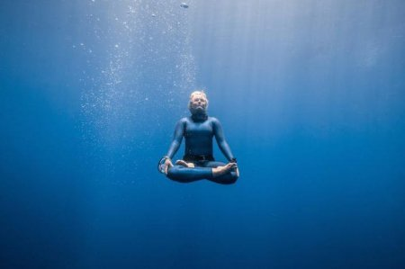

Вода – природнє середовище для нашого організму. В ній немає місця паніки, страху та нервовості. У воді можна випробувати незвідане, відкрити в собі непізнане і насолодитися спокоєм. Діалог з морем, спортивні перемоги та спосіб медитації – все це сучасний фрідайвінг. Що це таке, які особливості саме цього виду спорту і фізіологія процесу – про все ця стаття.
Слава кінематографа
Багато хто з нас дізналися про зануреннях з затримкою дихання з саги Люка Бессона «Блакитна безодня» (1988). Фільм заснований на реальних подіях і герої не вигадані. Протистояння двох нирців – легендарного Жака Майоля (1927-2001) і Енцо Майорки (1931-2016) було насправді. Але фільм все-таки художній. А в житті Жак Майоль, автор книги «Homo Delphinus. Дельфін всередині людини» (1986), "людина-дельфін", захоплений нирець, що встановив декілька рекордів фрідайвінгу, покінчив життя самогубством. А Енцо Майорка, «король безодні», закінчив кар'єру спортсмена в 1988 році, отримавши серйозну баротравму легень, від якої так і не оговтався.
Екстремальне пірнання
Інформація для тих, хто не знає, що таке фрідайвінг – це плавання під водою з затримкою дихання (апное). Назву утворено від англійських слів free і dive– вільно і пірнати. Сучасний фрідайвінг має три напрямки:
- Комерційне – занурення з метою заробітку та підводне полювання.
- Рекреаційне – занурення для задоволення, спосіб активного відпочинку.
- Спортивний фрідайвінг. Що це таке буде розглянуто окремо. Слід зазначити, що для занять фрідайвінгом потрібна спеціальна підготовка і освоєння спеціальних технік. Для непідготовленої людини таке захоплення може бути вкрай небезпечним. Саме тому існує безліч шкіл навчання фрідайвінгу, де навчання проводять сертифіковані інструктори.
Історія фрідайвінгу
Що це таке – тобто пірнання із затримкою дихання – люди знали досить давно. Добування їжі і підводне полювання на узбережжях Африки, Месопотамії, далекого Сходу і Нового Світу були пов'язані із зануренням у глибини морів. До наших днів дійшли культурні явища нирців апное – пірнальники Ама в Японії, баджао на Філіппінах, нирці за перлами в Полінезії. Приблизно з 60-х років минулого століття почалося відродження цього спорту. Всесвітня Федерація Підводного Плавання водночас ратифікувала рекорди фрsдайверів. Численні порушення техніки безпеки та медичні дослідження про шкоду цього захоплення привели до припинення діяльності цієї організації. Але фрідайверів це не зупинило, вони продовжували пірнати. І гинути... У період з 1970 по 1990 рр. зареєстровано більше трагічних занурень, ніж за весь час існування сучасного фрідайвінгу.
У 1992 році з'явилася Міжнародна асоціація розвитку пірнання на затримці дихання (Association Internationale pour le developpement de l apnee), яка зареєструвала 213 рекордів фрідайвінгу і вручила понад 150 медалей на чемпіонатах світового рівня.
Спортивний фрідайвінг
Коли ми говоримо про рекорди і досягнення – мова йде про спортивні занурення з апное.
Це означає,
що спортсмени не використовують ніяких пристосувань для дихання під водою, а розраховують лише на власні
вміння. Сучасний фрідайвінг ділять на дисципліни, що проводяться в басейні і на відкритій воді. Коли
говорять про рекорди та досягнення, мова йде про вид спорту фрідайвінгу.
Фрідайвінг в басейні
У закритій воді проводяться змагання з наступних дисциплін:- STA – статична затримка дихання (спортсмен затримує дихання, лежачи у воді).
- DNF – плавання під водою в довжину без ласт.
- DYN – пірнання в довжину з моноластой або ластами.
Фрідайвінг у відкритій воді
Специфіка даних змагань – пірнання в глибину.- CNF – найскладніший вид. Нирець спускається вертикально вниз і піднімається вгору, використовуючи лише силу власних м'язів.
- CWT – занурення і спливання з допомогою моноласты або ласт.
- FIM – вільне занурення. Спортсмен спускається і піднімається по тросу.
- VWT – занурення з вантажем. Спуск проводиться за допомогою спеціального візка, а піднімається за допомогою власних м'язів.
- NLT - занурення без обмежень. Спуск здійснюється за допомогою вантажу або візки, а підйом з будь-яким спорядженням за вибором спортсмена. Останній вид найнебезпечніший і ним займається всього п'ять спортсменів у світі фрідайвінгу. Що це таке - спортсмен спускається практично без страховки і дуже швидко досягає граничних глибин.
Без обмежень – вчора і сьогодні
Почалося це екстремальне змагання в 1949 році. Підводний фотограф Раймондо Бучер (Італія) на спір пірнув на глибину до 30 метрів. Італійські нирці Еніо Фалько і Альберто Новеллі вступили в змагання, і перейшли кордон глибини 40 метрів.
У 1960 році Енцо Майорка пірнув на глибину 49 метрів, а в 1966 він поліпшив результат, занурившись на 54 метри. Сто метровий рубіж було подолано Жаком Майолем в 1983 році. Сучасний рекорд належить австрійському фридайверу Герберту Ницшу – 214 метрів в категорії без обмежень (2007). Він володіє титулом «найглибоководніша людина на землі» і поставив 33 рекордів у фрідайвінгу.
Що це таке – рефлекс пірнальника?
При зануренні людини на глибину понад 50 метрів, де тиск доходить до 6 атмосфер, у пірнальника спрацьовують рефлекси захисту - такі ж, як у дельфінів і китів.Кров'яний зсув на певній глибині, уся кров організму відтікає від кінцівок, прямуючи в грудну клітку. Так організм рятується від роздавлювання.
Що вони відчувають?
Що ж відбувається в організмі фрідайвера і що він відчуває? В першу чергу парціальний тиск кисню знижується, розвивається гіпоксія. В той же час зростає парціальний тиск вуглекислого газу, розвивається гіперкапнія. Додайте до цього «азотний наркоз» - вплив високого тиску азоту на нервову систему. Як результат у одних нирців розвивається паніка і страх, в інших – стан ейфорії. Обидва прояви небезпечні – на глибині втратити самоконтроль означає загинути. Інше явище, з яким можуть зіткнутися пірнальники – «негативна плавучість». Це коли після 30-метрової глибини спортсмен вже не спливає, а вільно йде на глибину. Саме це стан вільного польоту описують фрідайвери.
Спорядження спортсмена
Спорядження відрізняється підвищеною ергономічністю і гідродинамічними якостями, меншою вагою і відсутністю порожнин з повітрям.- Вантажні пояси для компенсації плавучості спортсмена. Це гнучкі трубки, наповнені свинцевим пилом або ремені зі свинцевими вантажами. Для збереження горизонтального положення використовуються вантажні нашийники.
- Костюм з неопрену з відкритими порами. Висока еластичність, добре облягає тіло, мала теплопровідність – головні характеристики костюма. Одягнути його нелегко навіть використовуючи спеціальні мастила. У південних водах використовують костюми з лайкри – вона не допоможе від холоду, але врятує від жалких медуз.
- Ласти фрідайвера більш жорсткі і довгі (від 80 см), використовується і моноласта з однією калошею.
- Ласти з відкритою п'ятою
- Моноласт
- Ласти із закритою п'ятою
- Маска для фрідайвінгу відрізняється мінімальним внутрішнім простором, що перешкоджає отриманню обтиску. Використовуються і рідкі окуляри – вони містять порожнину між очима і лінзами, яка заповнюється водою.
- Трубки використовуються для дихання між зануреннями.
- Ножі для фрідайвера - це не зброя, а рятувальний інструмент.
Фрідайвінг для себе
Коли метою не є встановлення рекордів, то такий фрідайвінг називають рекреаційним. Ним займаються ті, хто хоче поліпшити самопочуття, більш повно відчути власне тіло, створити власний стиль життя, побачити підводний світ. Існують занурення і для екстремалів – підлідний, печерний фрідайвінг, підводне полювання і дайв-сафарі. Ще одним напрямком прикладного фрідайвінгу є підводні фото і відеозйомка. Окремий напрямок – постановочні підводні фото. Навички фрідайвера в даній сфері діяльності можуть стати в нагоді фотографу.
Занурення як спосіб медитації
Про медитативні особливості занурень говорив ще Жак Майоль. Наявна при фрідайвінгу затримка дихання може стати одним з елементів йоги. При зануренні людина може увійти в стан розслаблення, спокою, розумового мовчання. Це і є медитація, і такі відчуття описують багато фрідайвери.
Як це вплине на організм?
Постійні тренування затримки дихання приводять до позитивних змін у нашому організмі:
- Збільшується резервний транспорт кисню, що призводить до підвищення фізичних і інтелектуальних можливостей.
- Нормалізується імунний статус і неспецифічна резистентність, що підвищує загальний рівень опірності організму.
- Зникає хронічна втома, нормалізується і поліпшується якість сну.
- Відбувається оптимізація психоемоційного стану і стійкість до значним нервовим і емоційним навантаженням.
- Це хороша практика для альпіністів.